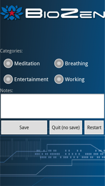

New Session
New Session - Recording Data

Meditation sessions are started from the main screen by pressing the "New Session" button (above).
A "session" consists of a timed period where biosensors attached to the mobile device you are using will collect and record data which you can then use to assess the effectiveness of your meditation session afterward.
During this period, the biosensors will control a set of images (Preference Selections) on the screen designed to give feedback on your meditation session. The general goal is to make the images on the screen as bright as possible.
The default set of images is titled “Sunset”, which consists of the following three images:
The Session Image
The background image is static (even through biosensors may change, the background image always stays the same).

The Background Image
The background image is overlaid on top of the session image. Its intensity is controlled directly by one of the biosensors (by default it is controlled by the EEG parameter e-Meditation but can be changed via preferences). The stronger the signal of the selected parameter, in this case e-Meditation, the brighter the image gets.
The sum effect of the session image and the background image is that the stronger its selected parameter gets, the more the composite image looks like daytime – conversely the weaker its selected parameter gets, the more the composite image looks like nighttime.

The Foreground Image
The optional foreground image (See section 7 Preference Selections) is also overlaid op top of the session image.
Its intensity is also controlled by one of the biosensors (by default it is controlled by the skin temperature but can be changed via preferences) but in a different fashion than the background image is controlled. The intensity of the foreground image gets stronger when its selected parameter tends to stay the same and it gets weaker (or more transparent) as its selected parameter tends to make frequent changes.

The Session
Starting the session
When you first a session a session startup screen will appear:
- EEG signal strength:

- Screen images. Initially, all of the images that were configured for this session appear at full intensity – that way you get a good idea of all of the elements that might appear on the screen.
- Start button. Press this button when everything is set up and you are ready to go.
- Prompt message. If you have selected any EEG parameters you will be asked to adjust the EEG headset until the signal strength indicator at the top of the screen turns green and indicates a good signal connection (3 – 5 bars). If you have difficulty getting the indicator to turn from red to green or to get enough bars try adjusting the headset and its electrodes. Make sure that the electrodes have a good connection to your skin on your ear and on your forehead. Wiping the electrodes with a little plain saline solution often helps ensure a good connection.
After you have established a good connection and pressed the start button all of the images except the main session image will fade out to transparent at which point they begin to be controlled by the selected parameters of the biosensors. At this point you should attempt to maximize the intensity of the background and (if configured) foreground images.
Note that during the session, the signal strength indicators (red/greed bars at the top right of the screen) will only be visible if they indicate a bad connection, otherwise they will be invisible.
At any time during the session you may touch anywhere on the screen to toggle on screen controls. When toggled you will see:
- Quit button. Allows you to quit the session before the timer countdown reaches zero.
- Timer countdown. Timer which indicates the amount of time remaining in the session.
Ending the Session
When the countdown timer reaches zero BioZen will playback a series of bells to notify you of the end of the session (alternatively you can end the session by pressing the "quit" button).
You will then be presented with the "End Session" screen. Here you are given the option to select a category for the session (Meditation, Breathing, Entertainment, and Working), and enter notes to be saved with the session.
Pressing "Save" will save the session so that you can review it later on. You may also press "Quit" to exit back to the home screen without saving, or press "Restart" to go return to the session (in case you pressed "Quit" before the end of the session).
